I. The Mesopotamian Number System
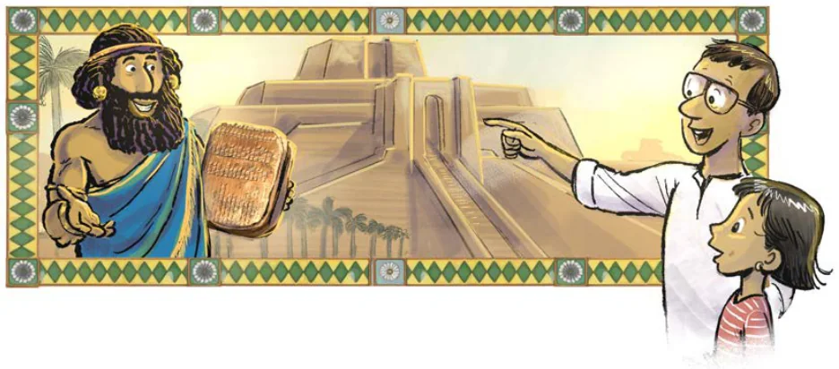
In the beginning, the number system used in ancient Mesopotamia had different symbols for different landmark numbers. In later times, it became a base-60 system, also called the sexagesimal system, with a very efficient number representation. It has puzzled many why they chose base 60. Different theories exist to explain this, ranging from the connection between 60 and the periods of some important events (like the length of their lunar month which had 30 days, or the time taken for the Sun to complete one revolution around the Earth when Earth is taken to be stationary), the ease of representing fractions (we will not go into this here), their earlier sequence of landmark numbers — 1, 10, 60, 600, 3600, 36000,… — getting reduced to only the powers of 60, and so on. The influence of the Mesopotamian sexagesimal system, also known as the Babylonian number system, can be seen even now in our units of time measurements — 1 hour \(= 60\) minutes and 1 minute \(= 60\) seconds. This system used the symbol
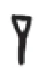
for 1 and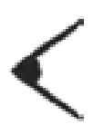
for 10. Let us now briefly pause on the study of their number system, and ideate on how one can build an efficient number system using the Mesopotamian features seen so far.
Let us give our own symbols to their landmark numbers —
\(1 \qquad 60 \qquad 60^2 = 3600 \qquad 60^3 = 216000\ \ldots\)
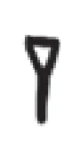
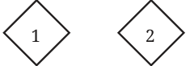
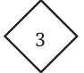
Note that we have actually used Indian numerals in creating these symbols. We could have invented our own symbols but for the sake of easy recall and use, we have chosen to take help of the familiar numerals 1, 2, 3, ...
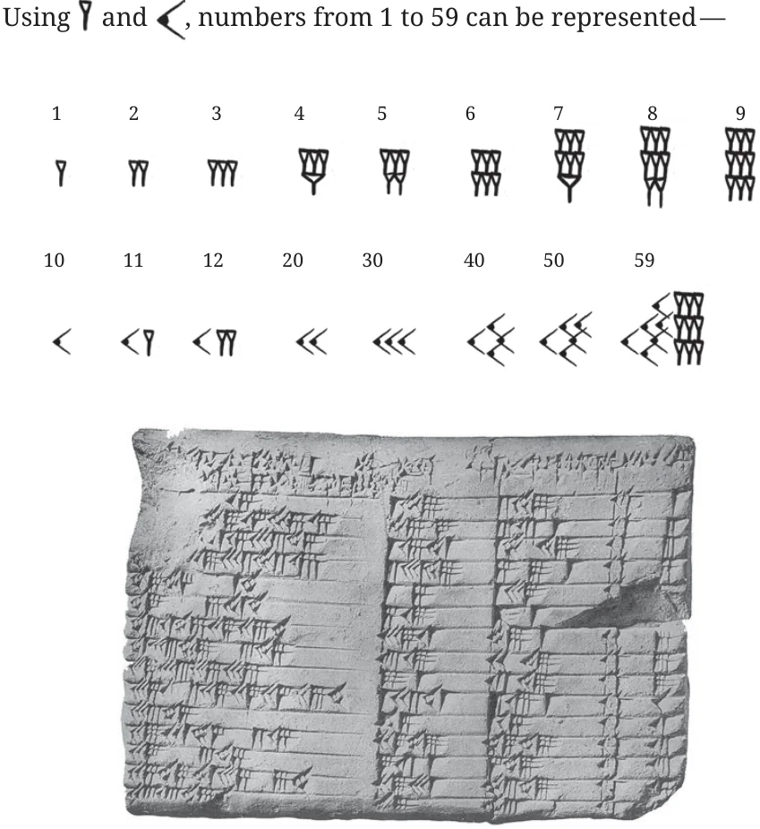
Reproduction of a Mesopotamian Tablet
Example: Let us represent the number 640 in this system. Grouping it into landmark numbers, we see that
\(640 = (10) \times 60 + 40\).
If we use the Egyptian idea, this number would be represented using
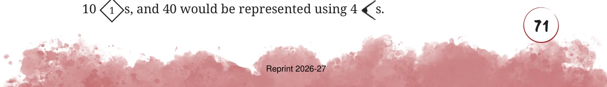
We can simply represent this number as
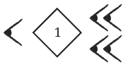
which can be read as ten 60s and one 40, just as we have written in the equation.
Example: Let us try another number — 7530.
\(7530 = (2) \times 3600 + (5) \times 60 + 30\)
So, its representation would be
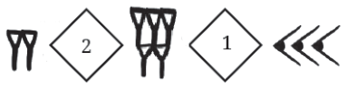
Note that when a number is grouped into powers of 60 for its representation, no power of 60 can occur 60 or more times. If this happens, then 60 of them can be grouped to form the next power of 60. For example, consider the expression —
\((1) \times 3600 + (70) \times 60 + 2 = (1) \times 60^2 + (60 + 10) \times 60 + 2\)
\(= (1) \times 60^2 + 60^2 + (10) \times 60 + 2\)
\(= (2) \times 60^2 + (10) \times 60 + 2\)
Therefore, any number can be represented using the numerals from 1–59, along with the numerals for landmark numbers. Now, what if we make the representation even more compact by dropping the symbols for the different powers of 60 altogether?
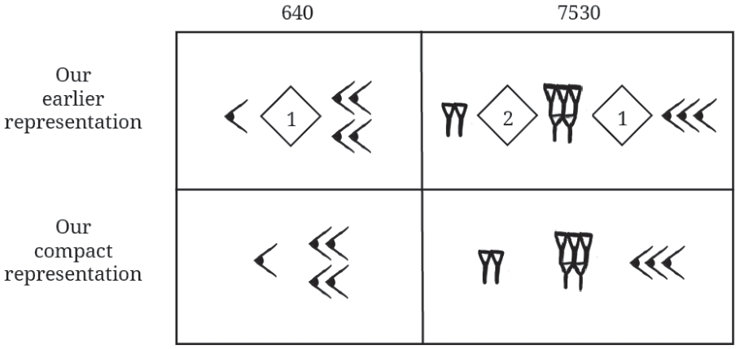

This is exactly what the Mesopotamians did! In their numeral, the rightmost set of symbols showed the number of 1s, the set of symbols to its left showed the number of 60s, the next showed the number of 3600s and so on. Whenever there was no occurrence of a power of 60, a blank space was given in that position. It does not seem that the Mesopotamians arrived at this idea in the same way we did. Some scholars suggest that the similarity of symbols given to the landmark numbers 1 and 60 in their earlier number system, and an accidental usage of them, might have made them stumble upon this idea.